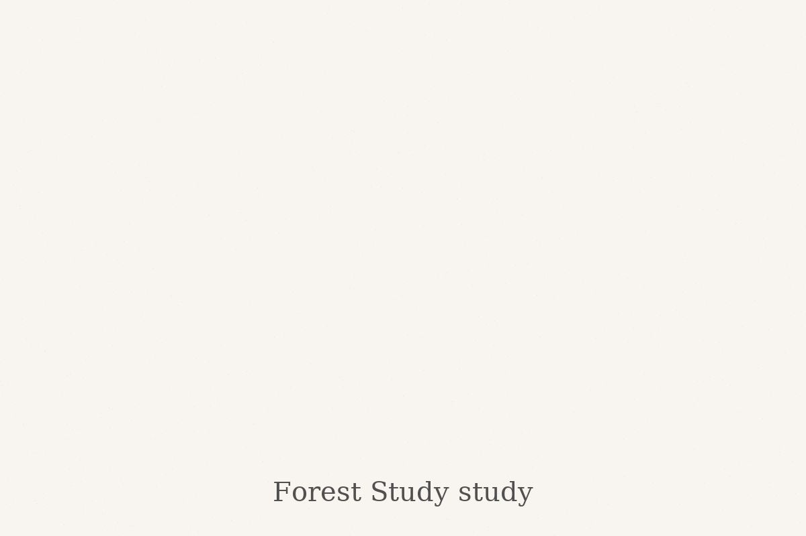

About Me

Elizaveta Morris
My name is Elizaveta Morris. I am an artist passionate about bringing animals and people to life on paper. Each portrait I create is more than just a drawing — it’s a memory, an emotion, a story. I fell in love with pencil art in childhood, and since then it has become my way to connect with the world and with people.